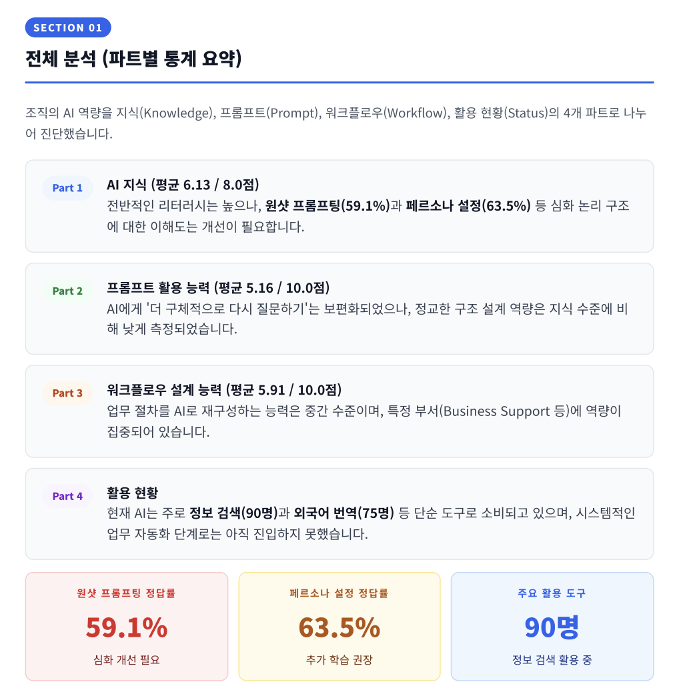
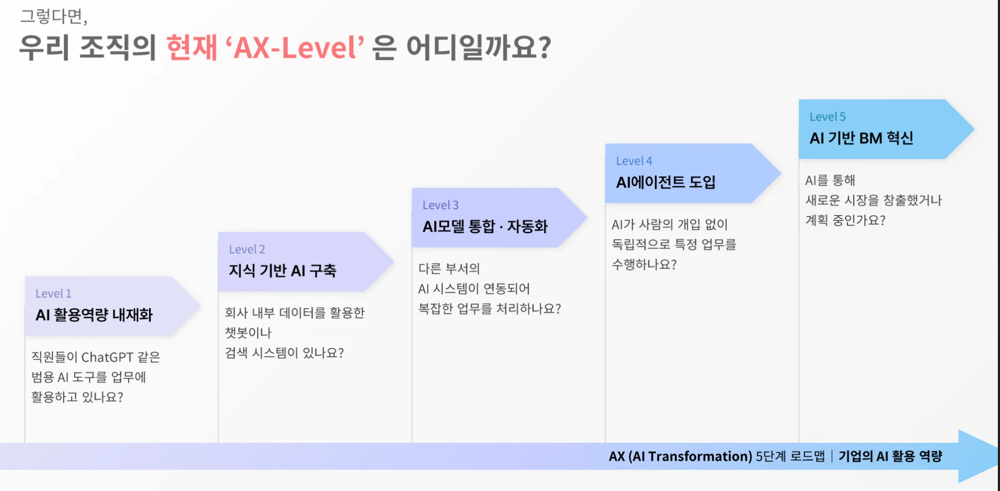
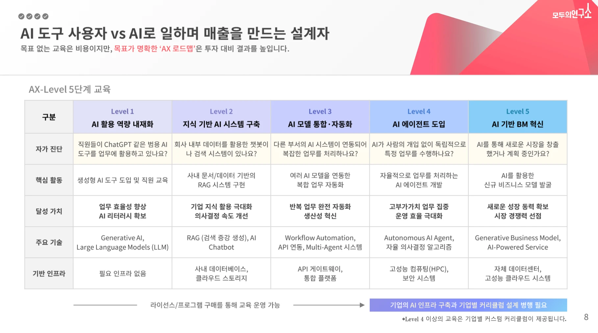

Portfolio
이은경
자연어처리 석사 · 기업 AX 과제 발굴과 설계
여정
-
2018 ~ 2024 · 파리
언어와 인공지능을 함께 공부하다
외국어를 좋아해 프랑스어를 배웠고, 사람의 언어를 이해하는 AI에 관심이 생겨 파리에서 언어학과 인공지능을 함께 공부했습니다. 연구 기관에서는 AI 튜터와 학습자의 대화 데이터를 분석하고 라벨링 기준을 맞췄고, 프랑스 경제부 디지털 규제 전문 센터에서 LLM 평가 연구로 학위논문을 썼습니다.
Université Paris Nanterre 언어학 학사
Université Paris Cité 언어공학(자연어처리) 석사 -
2020 ~ 2025 · Suit
배우는 사람 곁에서 도구를 만들다
공부와 연구를 하며 제가 배움의 과정 자체에 관심이 많다는 것을 알게 됐습니다. 외국어 학습 서비스 Suit를 직접 운영하며 학습자마다 맞춤 커리큘럼을 만들었고, 학습자의 수준과 관심사에 맞춘 GPTs 9개와 디지털 학습지를 만들었습니다.
-
2025 ~ 2026 · 모두의연구소
교육으로 기업의 AX를 돕다
기업교육팀에서 여러 고객사의 AI 교육을 기획했습니다. 조직의 AI 활용 수준을 진단하고, 현업 구성원이 자기 업무용 AI 에이전트를 직접 만드는 과정을 설계했습니다.
-
지금 · 교육 다음
지금 보는 곳
교육 만족도는 대체로 높았지만, 배운 사람이 실제로 업무에 썼는지는 알기 어려웠습니다. 기본적인 업무 환경이 갖춰지지 않은 조직에서는 아무리 좋은 AI도 녹아들지 못한다는 것도 보았습니다. 교육은 씨앗을 뿌리는 일입니다. 이제는 조직의 목표와 업무 환경, 도메인 데이터라는 토양을 이해하는 데서 출발해, AI가 업무에 뿌리내리고 성과로 이어질 때까지 이끌어 가려 합니다.
LLM 평가 연구
온라인 콘텐츠의 혐오 표현을 LLM이 자동으로 가려내게 하는 연구. 어떤 프롬프트 전략이 어떤 모델에서 잘 작동하는지 재는 틀이 필요했습니다.
한 일
- 최신 논문과 사례를 바탕으로 여러 프롬프트 전략을 설계하고 최적화
- 여러 LLM의 혐오 표현 분류 성과를 정량 · 정성 방법으로 비교하는 평가 프레임워크 구축
- 모델 응답이 지나치게 장황한 문제에는 LLM-judge 전략을 설계. 첫 모델의 분류 응답이 장황하면 두 번째 모델이 요약하고 다시 분류해, 정확하고 간결한 예측을 유도
평가 흐름
- 01프롬프트 전략 설계
- 02여러 LLM의 분류
- 03장황한 응답은 LLM-judge가 요약 · 재분류
- 04정량 · 정성 평가
결과
이 연구로 석사 학위논문 「Hate Speech Detection with Prompting LLM」을 썼습니다. 데이터는 프랑스어, 논문은 영어입니다.
OpenAI API · Hugging Face · vLLM · Python
현업 주도 Agent 캠프
전사 AX 가속화를 위한 경쟁입찰. 가상 데스크톱(VDI) 환경이라 외부 도구를 쓸 수 없는 조건에서, 현업 구성원이 사내 플랫폼의 노코드 · 로우코드만으로 업무용 AI 에이전트 MVP를 5일 안에 직접 만드는 과정.
내가 본 것
만들고 싶은 것과 지금 만들 수 있는 것은 다릅니다. 그래서 자동화할 업무를 넓게 꺼낸 뒤, 「사내 툴 · 사내망 · 주어진 데이터로 지금 만들 수 있는가」로 좁혔습니다.
Idea to MVP 5단계
- 01발산기획
- 02학습
- 03수렴기획
- 04정의
- 05구현
에이전트를 만들기 전에 아이디어톤을 두고, 수렴기획에서 「지금 만들 수 있는가」로 과제를 좁힙니다.
한 일
- Idea to MVP 5단계 방법론 정립
- Agent 기획서 · 정의서 템플릿과, 산출물이 기준을 넘는지 가리는 평가 체계 설계
- 5일 동안 현장에서 참여자의 이해도와 중간 결과물을 확인하고, 고객사 담당자의 피드백을 매일 과정에 반영
- RFP 분석 · 입찰설명회 · 기술미팅 직접 리드
결과
조직 진단에서 설계로
전사 AI 교육 프로그램을 설계하기 전에, 임직원 115명의 AI 활용 수준 · 업무 병목 · 학습 수요를 파악하는 일.
내가 본 것
진단 결과가 곧 설계의 입력이 되어야 합니다. 그래서 설문을 업무 병목 → AI 활용 현황 → 기대 효과 · 학습 수요 → 역량 진단 순으로 짰고, 역량 문항은 실무에서 판단해야 하는 상황으로 냈습니다.
한 일
- 설문 설계(한국어 · 영어)부터 채점 · 분석, 조직 AX 역량 분석 리포트까지 단독 수행
- 진단 키트의 전 과정(설문 생성 → 응답 취합 → 자동 채점 → 리포트 생성)을 Claude Code로 자동화해 영업에 투입

진단에서 설계로
| 진단에서 확인한 것 | 설계에 반영한 것 |
|---|---|
| AI 활용이 정보 검색(78%) · 번역(65%)에 치우친 단순 도구 소비 단계 | 프로그램 난이도의 출발점 |
| 원샷 프롬프팅 정답률 59.1% · 페르소나 설정 63.5% | 고급 프롬프팅 모듈 편성 |
| 응답자 95% 이상이 이미 AI 결과를 고치거나 사실을 확인한 뒤 사용 | 산출물 검증은 재교육하지 않음 |
업무 병목은 수치 입력 오류 42명 · 반복 문서 작성 30명 · 반복 문의 대응 28명으로 확인했습니다.
AX 로드맵과 자가 진단
AI 교육 수요는 빠르게 바뀌는데, 수요마다 교육을 처음부터 다시 설계하는 것은 전략적이지 않았습니다. 고객사는 맞춤을 원하면서도 가이드를 먼저 제안받기를 원했습니다.
내가 본 것
조직의 AI 단계는 하나여도, 구성원마다 받아야 할 교육은 다릅니다. 그래서 「AI 성숙도 단계 × 교육 대상」의 두 축으로 틀을 짰습니다.
한 일
- 기업의 AI 성숙도를 5단계로 정의하고, 비개발 실무자 · 관리자와 경영진 · 개발자에 맞춰 과정을 배치한 AX 교육 로드맵 구축(트랙 5개 · 커리큘럼 약 30개)
- 로드맵을 고객용 사업 소개서로 옮기며 AX-Level 자가 진단 · 조직 유형 4가지와 유형별 추천 교육 · 직무별 교육 사례 10개를 직접 제작
- 로드맵을 바탕으로 고객사에 맞는 교육을 찾아 주는 진단 키트로 확장(사례 03)

